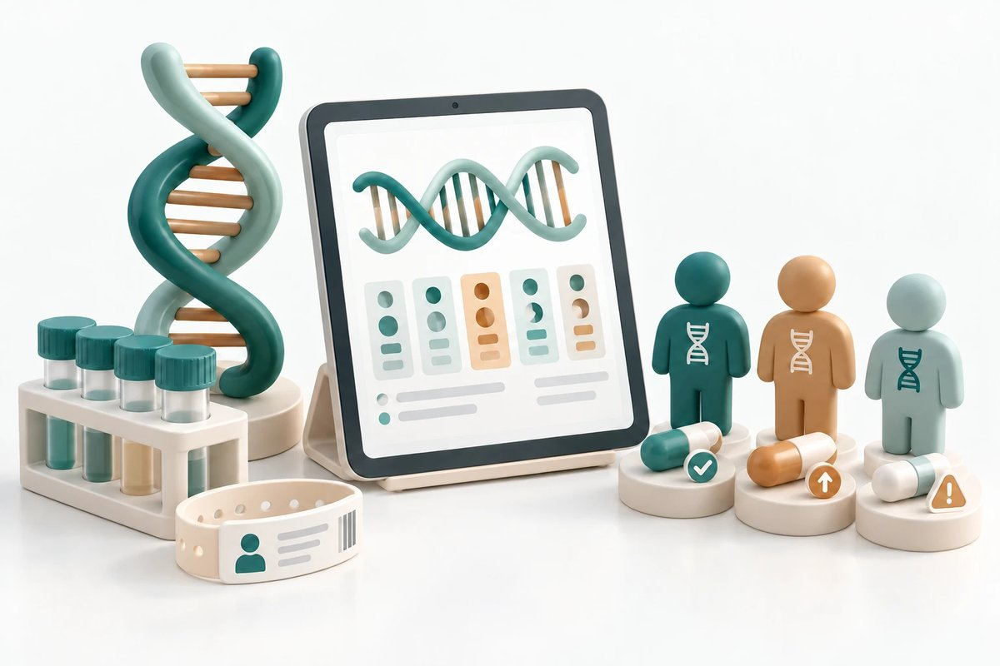
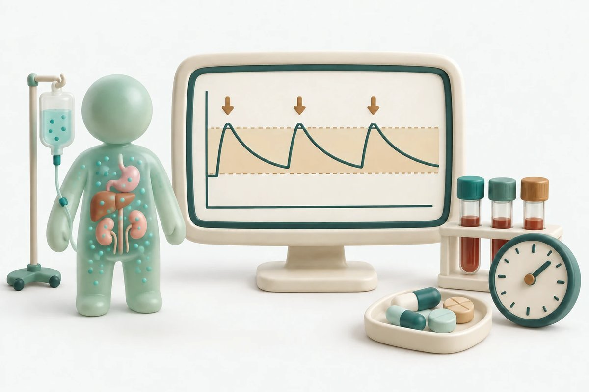

PRECISE Lab은 실제 임상환경에서의 약물치료 효과와 안전성을 보다 정확하게 이해하고 개인별로 최적화된 약물치료 전략을 제시하기 위해 약물역학, 약물감시, 약물유전체학 및 약동학 연구를 수행합니다. 또한 이러한 근거가 실제 환자 진료로 이어질 수 있도록 약사 직능 개발과 관련된 연구에도 관심을 두고 있습니다.

대규모 실제 임상자료를 활용하여 의약품의 사용 양상과 효과 및 안전성을 평가하고, 약물치료와 환자 예후의 관계를 연구합니다.
의약품 사용 후 발생하는 이상사례와 안전성 문제를 탐색하고, 국내외 약물감시 자료를 이용하여 새로운 안전성 신호를 탐색하고 평가합니다.
유전적 특성과 임상정보를 함께 활용하여 약물의 효과와 이상반응에서 나타나는 개인 간 차이를 이해하고, 환자 맞춤형 약물치료의 가능성을 연구합니다.

약물의 흡수, 분포, 대사 및 배설 과정과 이에 영향을 미치는 환자 특성을 분석하여 개인 간 약물 노출의 차이를 이해하고, 적정 용량 및 맞춤형 약물치료 전략을 연구합니다.

약물치료의 근거가 실제 환자 진료로 이어지기 위해서는 약사의 전문적 역할이 중요합니다. 약사 주도 약료서비스와 의약품 안전관리 체계를 평가하고, 약사 직능의 개발과 확대 및 관련 제도 개선에 필요한 근거를 마련하는 연구에 관심을 두고 있습니다.